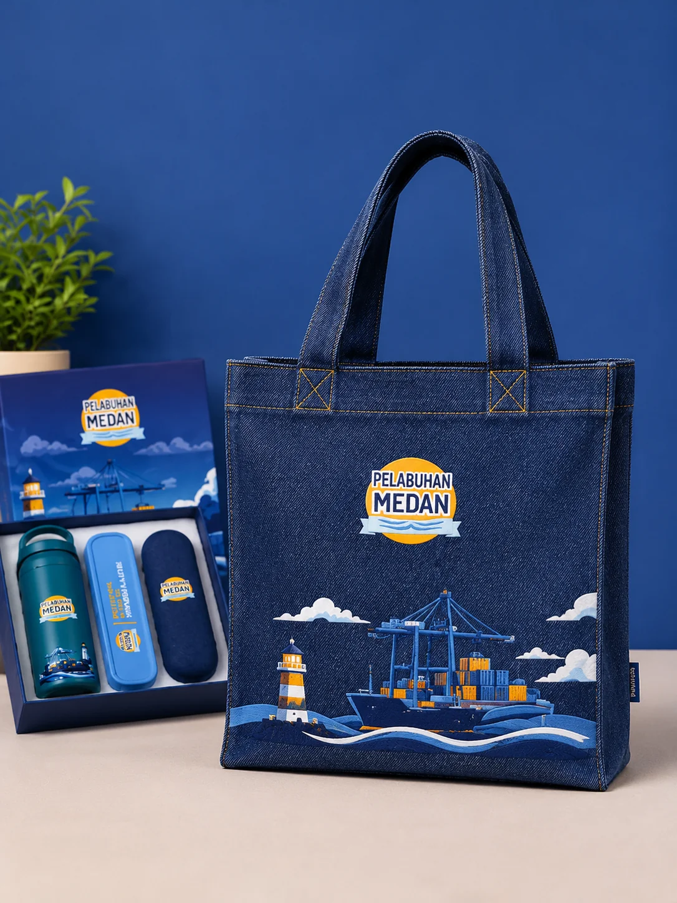
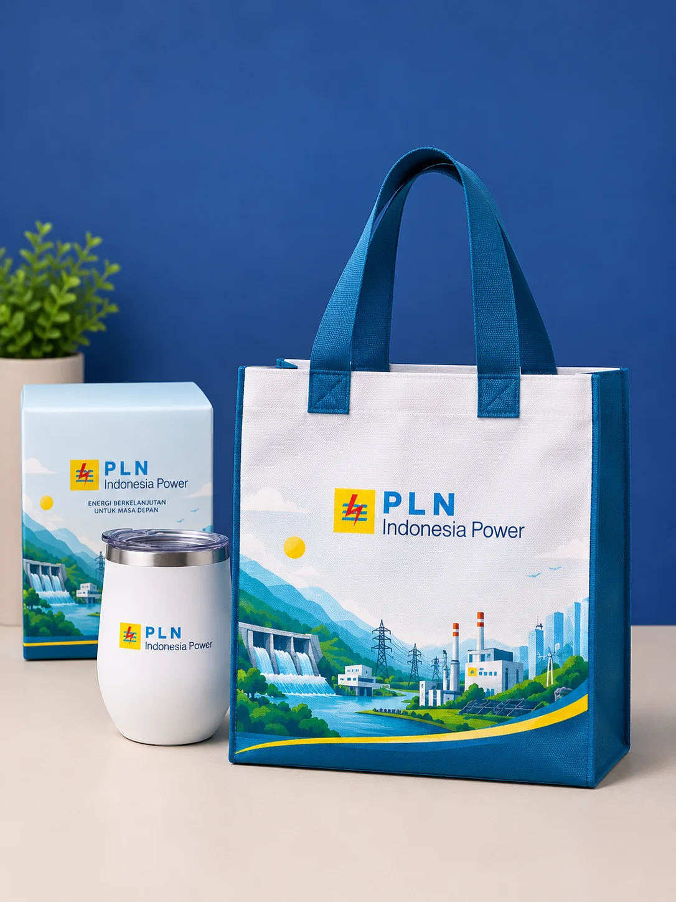
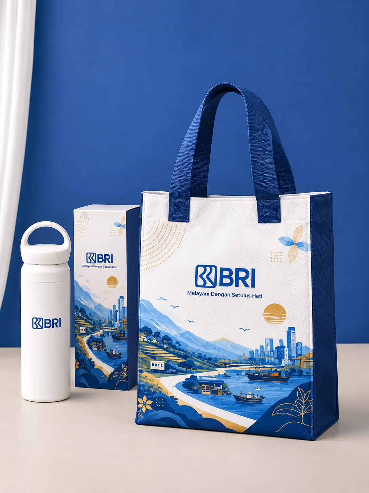
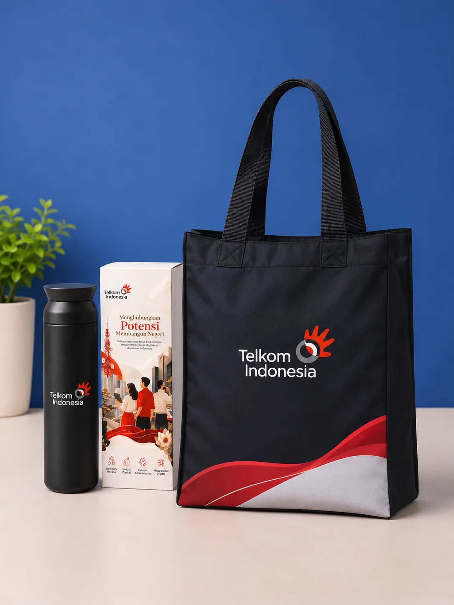
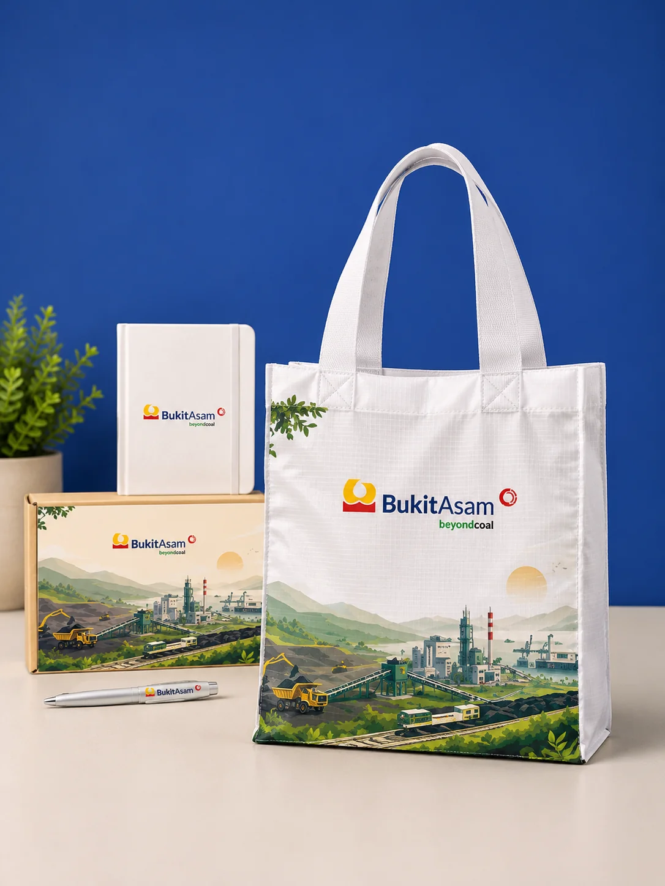
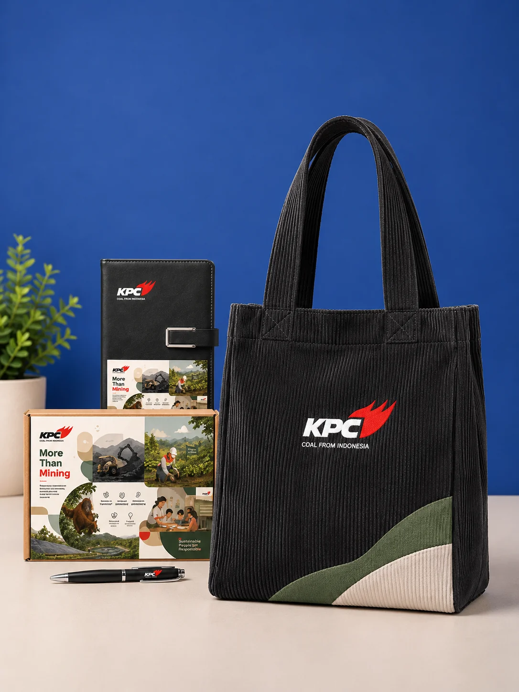
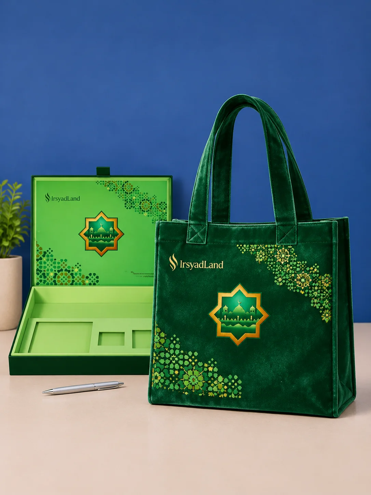
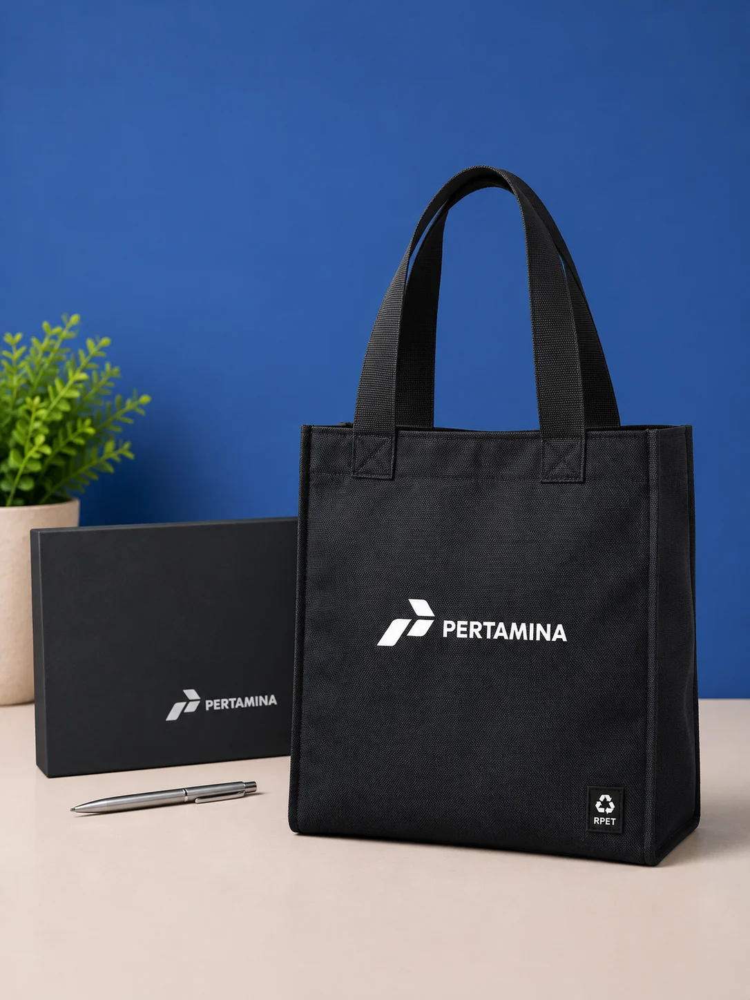

Goodie Bag Kanvas
Mulai 50 pcs
Goodie Bag Seminar & Diklat Kanvas
Model fungsional berdesain kokoh dengan saku depan, ideal untuk berkas A4, notebook, dan paket seminar kit.
Eksplorasi ragam model fisik goodie bag custom produksi workshop tangan pertama sakabag Malang: Goodie Bag Seminar Kanvas, Denim Corporate, Korduroi Premium, Spunbond Promosi, Mika Transparan, hingga Etnik Goni Nusantara.
Model fungsional berdesain kokoh dengan saku depan, ideal untuk berkas A4, notebook, dan paket seminar kit.
 Executive Series
Executive Series
Bahan denim washed premium berkarakter kokoh dan fashionable untuk program CSR BUMN dan gathering korporat.
 Eksklusif & Trendi
Eksklusif & Trendi
Tekstur korduroi timbul yang estetik dan kekinian dengan saku depan untuk merchandise distro dan event kreatif.
 Paling Ekonomis
Paling Ekonomis
Kain spunbond non-woven ramah lingkungan berdaya tampung luas untuk promosi ritel massal, pameran, dan bazar akbar.
 Executive Luxury
Executive Luxury
Goodie bag semi-kulit sintetis bertekstur mewah dengan double handle kokoh untuk seminar eksekutif dan cinderamata VIP.
 Kombinasi Elegan
Kombinasi Elegan
Kombinasi kanvas multi-warna dinamis beraksen tali webbing kulit untuk identitas komunitas, sekolah, dan universitas.
 Kedinasan Series
Kedinasan Series
Edisi resmi kedinasan militer dan instansi pemerintah dengan jahitan double stitch tangguh dan bordir logo presisi.
 Custom Spesial
Custom Spesial
Desain two-tone kontras dengan dua kompartemen saku depan multifungsi untuk diklat lapangan dan workshop interaktif.
 Eco Heritage Series
Eco Heritage Series
Perpaduan karung goni natural berkualitas dan kain tenun ikat khas nusantara untuk kenang-kenangan bernilai seni tinggi.
 Kenang-kenangan Series
Kenang-kenangan Series
Bahan blacu katun greige unbleached bernuansa rustic natural ramah lingkungan untuk cinderamata purna tugas dan syukuran.
 Event & Beauty Festival
Event & Beauty Festival
Bahan PVC mika tebal bening warna ruby aesthetic dengan sablon presisi untuk peluncuran kosmetik dan event festival fashion.
 Halus & Lentur
Halus & Lentur
Lebih halus dan lentur dari kanvas tebal
Kain tenunan katun bertekstur rapat dan halus, memberikan kenyamanan saat digenggam serta hasil cetak sablon detail tajam.
 Serat Diagonal Rapi
Serat Diagonal Rapi
Serat diagonal, kuat, rapi
Memiliki pola garis tenun miring diagonal khas yang kokoh, rapi, dan tahan gesekan untuk tas seragam dan acara semi-formal.

Trendy & FashionableTekstur khas jeans, fashionable
Kain berkarakter kasual modern dengan ketahanan tinggi yang fashionable untuk merchandise anak muda dan acara korporasi kekinian.
 Ringan & Tahan Percikan Air
Ringan & Tahan Percikan Air
Polyester sintetis, ringan
Serat sintetis berlapis coating tipis kedap air, berbobot ringan dan ekonomis untuk goodie bag pameran, expo, serta event massal.

Lebih Kokoh & TebalLebih kokoh
Versi lebih tebal dan kokoh dengan anyaman berkerapatan tinggi untuk menampung modul pelatihan tebal dan bingkisan berat.

Tenunan Rapat HalusTenunan rapat, umumnya sintetis
Anyaman benang halus berkerapatan tinggi yang tampak rapi, ringan, dan elegan untuk tas seminar akademik dan workshop profesional.

Water-RepellentHalus, relatif tahan percikan air
Kain berteknologi micro-coating hidrofobik yang licin dan tahan cipratan air, melindungi isi tas pada kegiatan gathering dan aktivitas luar ruangan.
 Ringan & Mudah Dilipat
Ringan & Mudah Dilipat
Ringan, mudah dilipat
Bahan ultra-ringan dan fleksibel yang mudah dilipat menjadi ukuran kecil, sangat praktis dibawa bepergian sebagai tas belanja harian.

Pola Penguat Anti-SobekMemiliki pola penguat terhadap sobekan
Anyaman berpola kotak-kotak khusus dengan benang penguat nilon yang efektif menghentikan sobekan, tangguh untuk medan lapangan.
 Tekstur Natural & Elegan
Tekstur Natural & Elegan
Tekstur natural, elegan
Serat tumbuhan alami berpori natural yang memberikan kesan mewah bersahaja, bernilai estetika tinggi untuk pernikahan dan brand premium.

Garis Timbul EstetikTekstur garis timbul, estetik
Kain bergaris timbul vertikal (wales) yang lembut dan retro, sangat digemari kalangan muda untuk merchandise brand fashion dan distro.

Lembut Berbulu & MewahLembut berbulu, mewah
Permukaan berbulu halus dengan kilau anggun berkelas, memberikan perlindungan ekstra dan impresi eksklusif untuk souvenir VIP dan perhiasan.

100% Serat Daur UlangSerat polyester daur ulang
Kain daur ulang ramah lingkungan bersertifikasi dari botol plastik daur ulang (Recycled PET), mendukung program keberlanjutan dan ESG perusahaan.
Kami siap membuatkan tas dengan dimensi khusus, kombinasi bahan bertingkat, penambahan furing satin, saku beresleting, dan tali webbing kustom sesuai kebutuhan brand Anda.